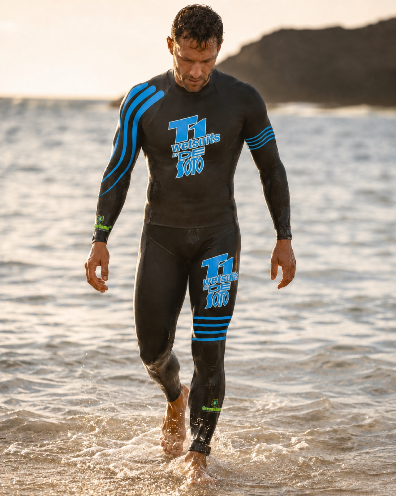
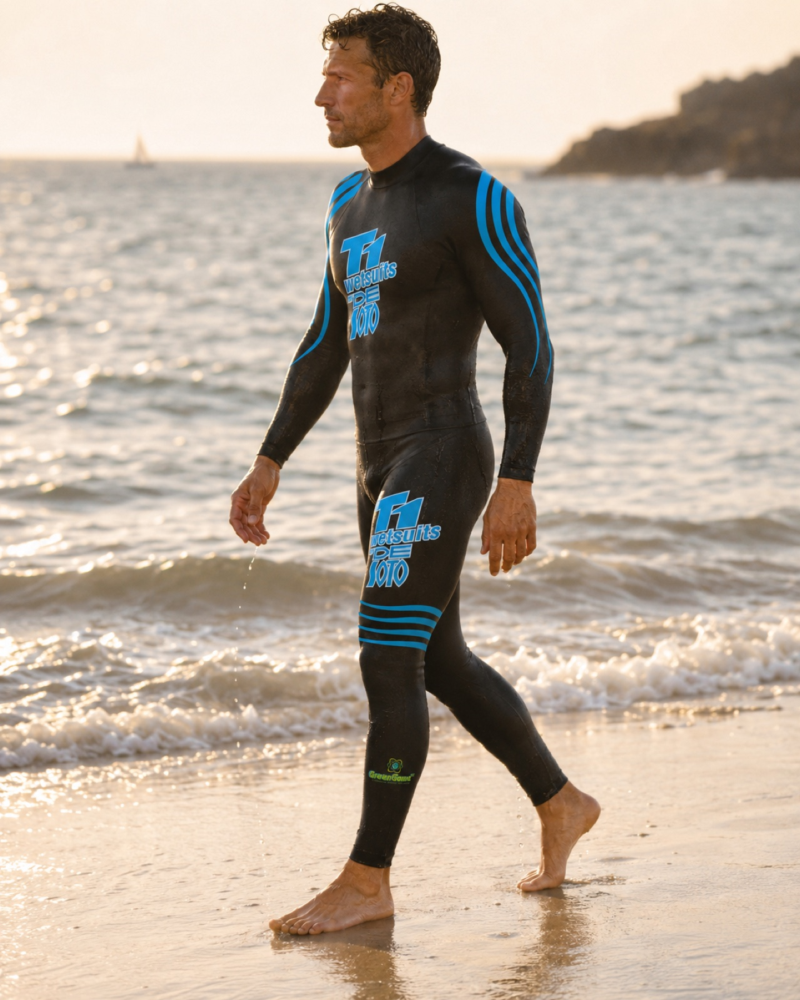
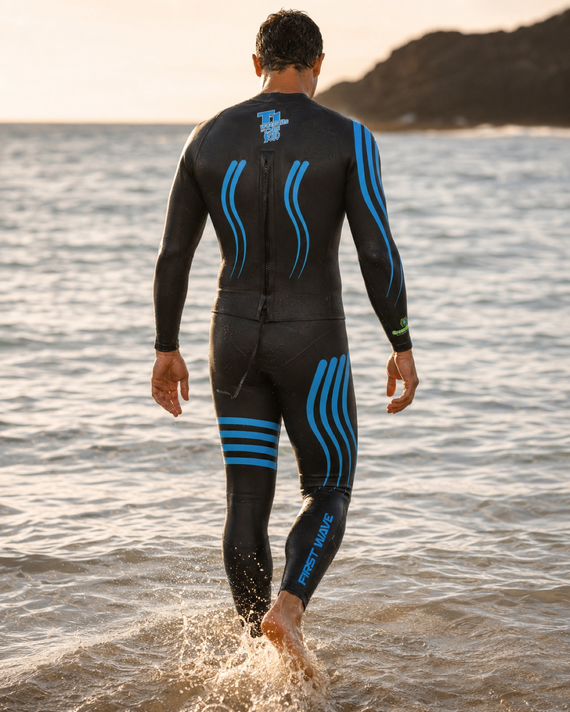
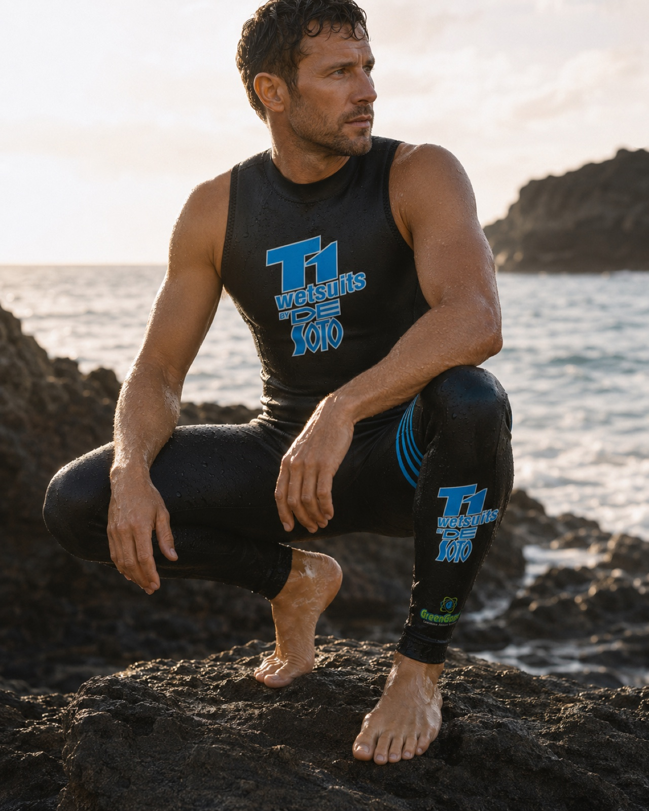
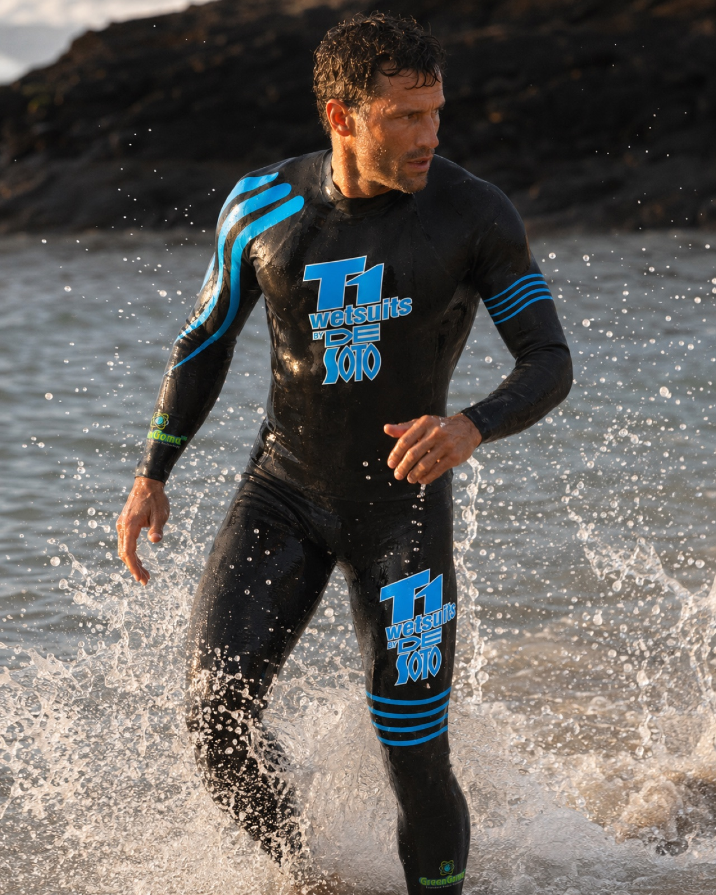
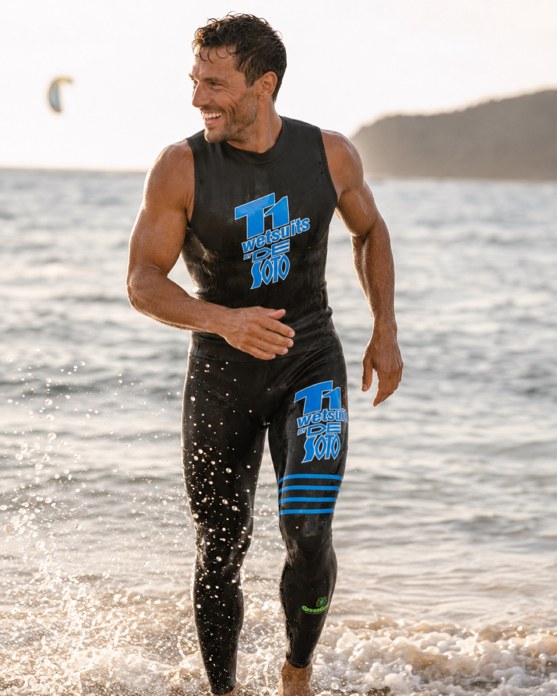
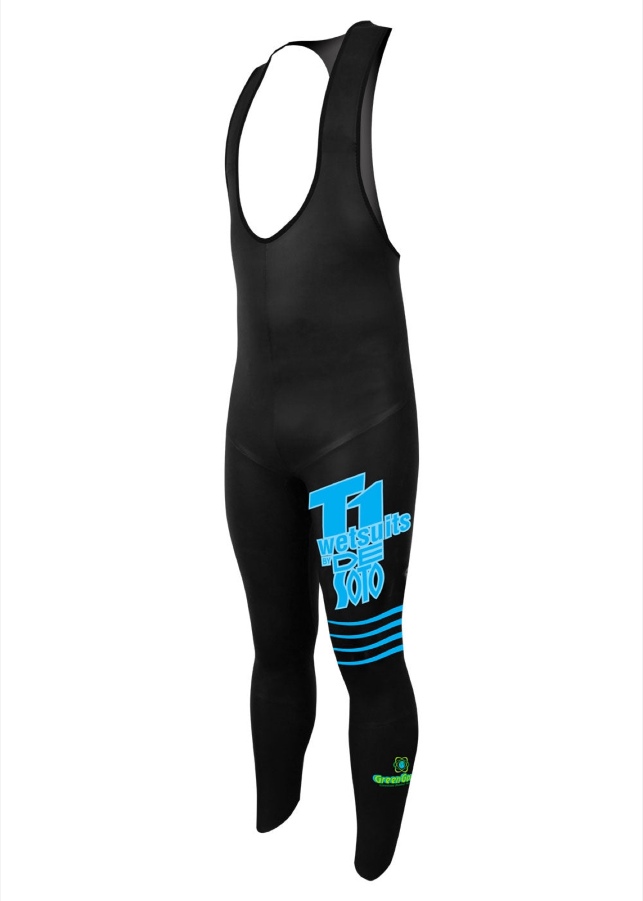
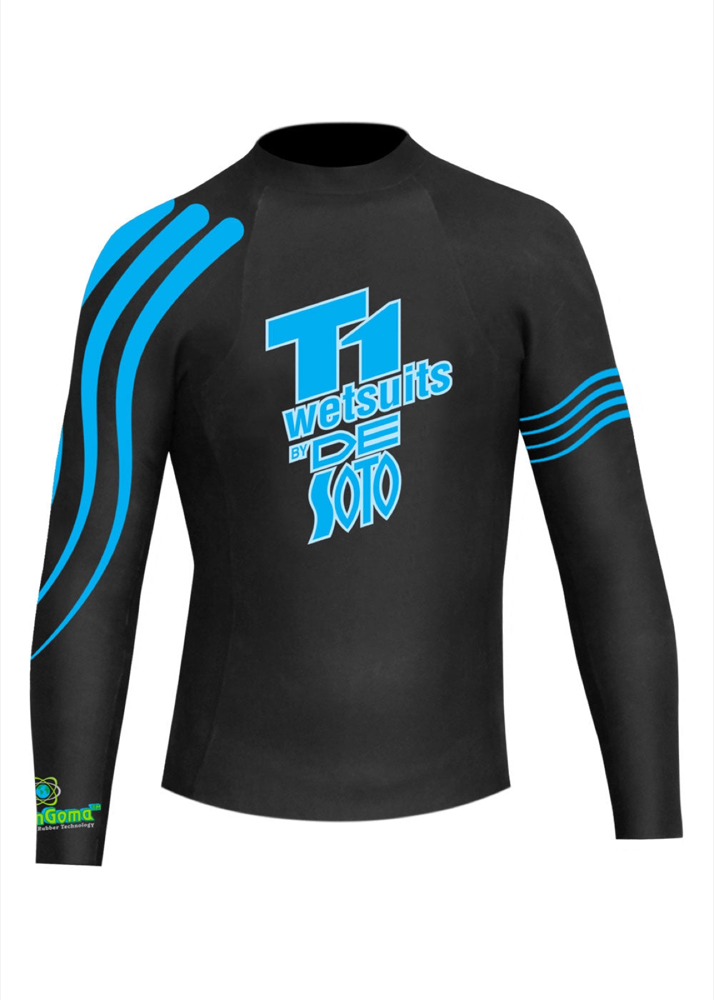
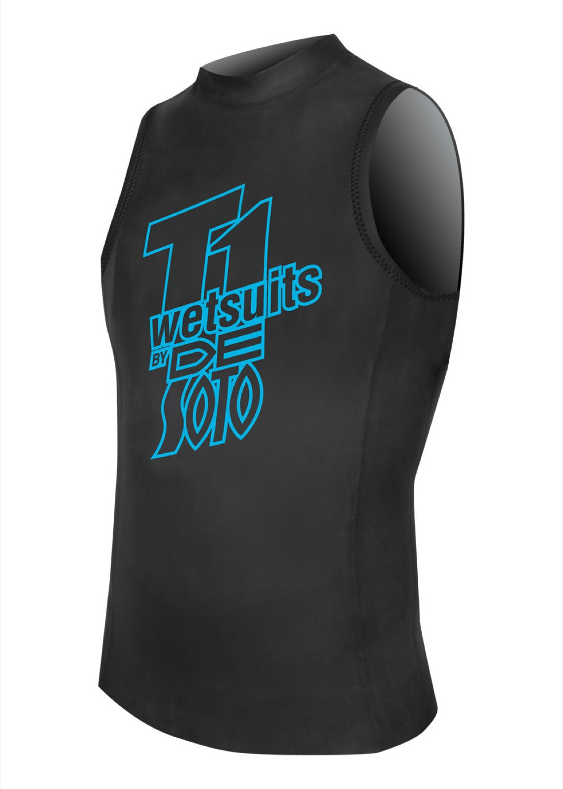
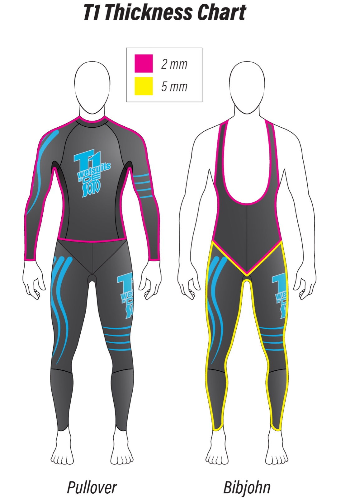

1 / 10










| 1 dag | € 25 |
| Weekend (vr-ma) | € 50 |
| Midweek (ma-vr) | € 75 |
| Hele week | € 100 |
De De Soto T1 First Wave is het beroemde tweedelige wetsuit-systeem van het Amerikaanse merk De Soto Sport — de pionier van de twee-stuks triathlonwetsuit. In plaats van één pak bestaat het uit een los onderstuk (Bibjohn) en een los bovenstuk, die elkaar in de taille overlappen. Het grote voordeel van die losse delen: het pak kan je armen nooit omlaag trekken. Bij een one-piece spant een strak zittend torso je schouders en armen naar beneden; hier bestaat die verbinding simpelweg niet, dus je houdt bij elke slag volledige bewegingsvrijheid — een lagere halslijn en echt vrije schouders.
Bij dit systeem horen drie delen: het Bibjohn-onderstuk (maat 5) plus twee bovendelen in maat 6 — de Pullover met lange mouwen voor koeler water, én de mouwloze Speedvest voor warm, wetsuit-legaal water. Je hebt dus in één set een oplossing voor zowel koud als warm water. Geïmporteerd uit de VS en de afgelopen jaren met veel plezier gebruikt.
Foto's tonen de De Soto T1 First Wave-lijn (zwart met blauwe T1-print) — vergelijkbaar met dit pak.
Los onder- en bovenstuk die telescopisch overlappen: niets dat je armen omlaag trekt of je schouders naar beneden spant. Volledige bewegingsvrijheid, een lagere halslijn en minder schoudervermoeidheid dan bij een one-piece.
Dik 5 mm rubber van de enkels tot de heupen tilt de grootste botten en spieren omhoog voor een efficiëntere waterligging — dunner 2 mm in het middenstuk voor bewegingsvrijheid.
De Soto's eigen limestone-neopreen — geen aardolie. Meer gesloten cellen (98,9% waterdicht), licht en snel droog, met een gladde Slick Composite Skin voor minder weerstand. 4-way-stretch voering en gelijmde, blind-gestikte naden.
Pullover met lange mouwen voor koeler water plus mouwloze Speedvest voor warm water. BIO-STROKE-armstand en een lichtgewicht, corrosiebestendige YKK-rits.
Alle wetsuits in de IkLeerBorstcrawl-shop zijn tweedehands. We delen ze in drie klassen in zodat je vooraf weet wat je mag verwachten:
Stuur een berichtje op WhatsApp en we reageren doorgaans binnen een paar uur. Bezichtigen of passen kan in overleg.
WhatsApp ons